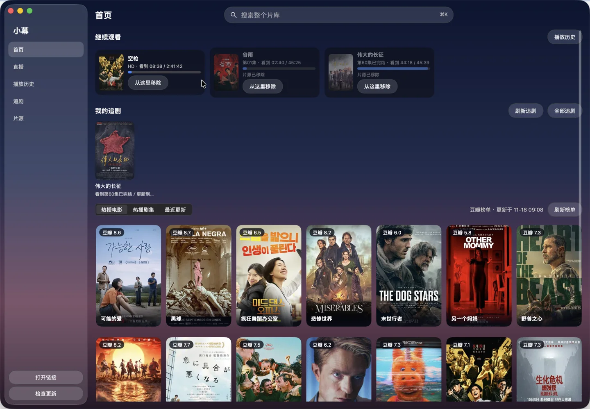
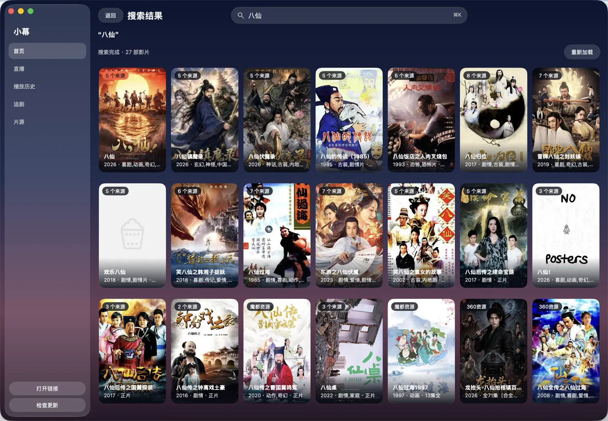
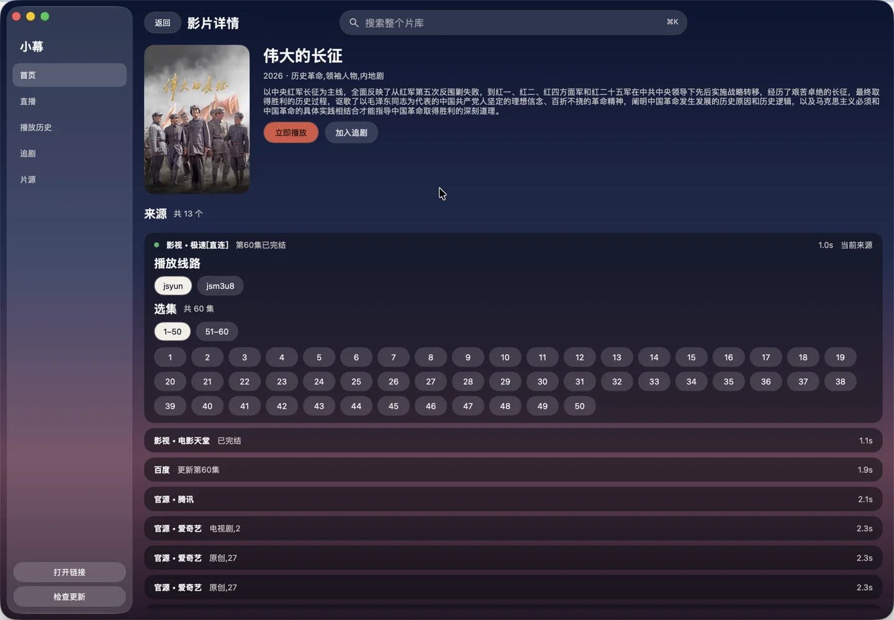
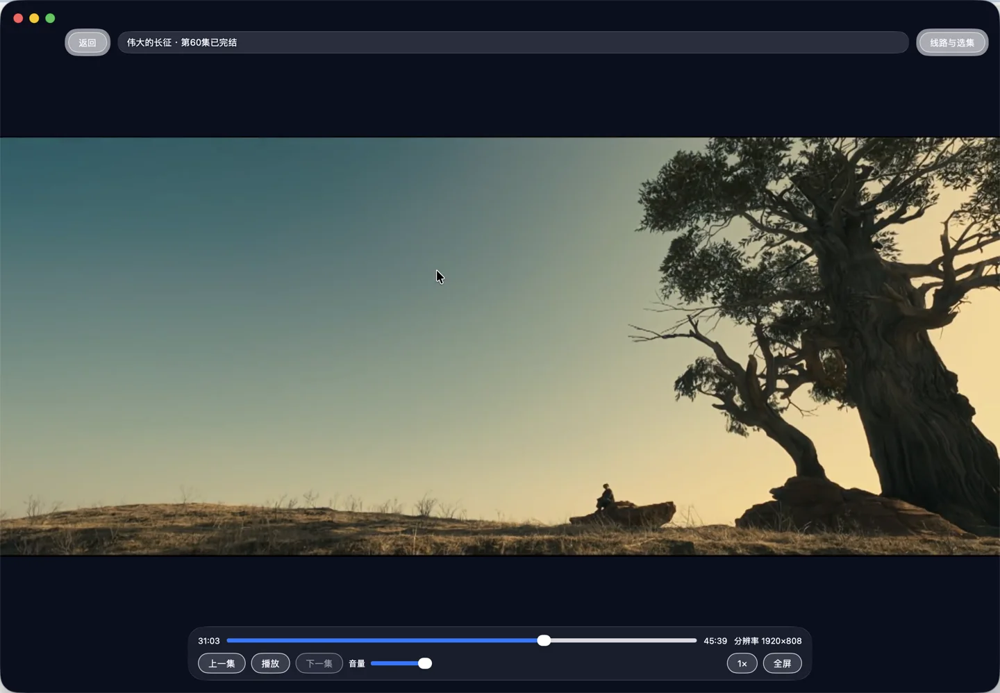
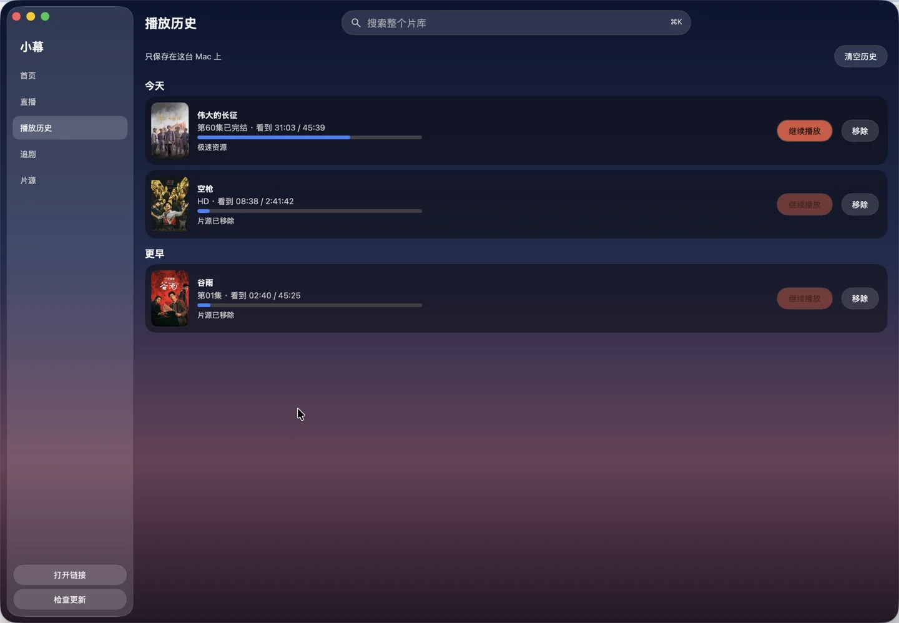

豆瓣热门推荐
首页有热播电影、热播剧集和最近更新榜单。点海报直接在你自己的片库里搜，榜单只提供片名、海报和评分，不提供播放地址。
一个入口，聚合你的所有片源。
macOS 原生桌面影视播放器。导入自己的 TVBox 配置或直播列表，豆瓣热门、跨站搜索、继续观看、追剧都有了。

看片要的东西都在这儿，不用在各个 App 之间来回切。
首页有热播电影、热播剧集和最近更新榜单。点海报直接在你自己的片库里搜，榜单只提供片名、海报和评分，不提供播放地址。
按 ⌘K 输入片名，一次搜遍所有已导入的片源。同名影片合并成一项，并标出来源数。
首页最上方显示最近 6 部的海报、分集和进度，点一下就从上次的地方接着看。
收藏的剧显示观看进度、最新分集和新集标记。刷新发现新集时发一条系统通知，点通知直接打开那部剧。
播放中切换来源或线路也不丢进度。解析失败或地址过期时可以重试，保留原来的分集和续播位置。
音量、点播倍速、自动下一集按本机保存，重启和切集后恢复。每部剧还能单独设置片头、片尾跳过秒数。
来源按实际请求耗时排序，快的排在前面。片源页可以手动重新测速，播放页实时显示下载速度。
双击本地 mp4、mov、m4v、m3u8 文件用小幕打开；xiaomu:// 链接可以直接播放或搜索；播放时控制中心显示片名和分集，媒体键能暂停、切集。
侧边栏“检查更新”就能升级，更新包经过签名校验，历史和追剧数据都会保留。
截图展示了导入配置后的界面，播放内容来自用户自备的片源。





三步装好。要求 macOS 13 及以上，Universal 安装包同时支持 Apple Silicon 和 Intel。
从 GitHub Releases 下载 .dmg 或 ZIP 安装包，附有 SHA256SUMS 校验文件。
打开 .dmg，把 Xiaomu.app 拖到“应用程序”。用 ZIP 的话，解压后把 App 移过去就行。
小幕使用本地签名，尚无 Apple Developer ID 签名及公证。首次打开如被系统拦截，请在确认下载来源后，到“系统设置 → 隐私与安全性”选择“仍要打开”。也可以在终端执行：
xattr -d com.apple.quarantine /Applications/Xiaomu.app这会跳过 Gatekeeper 的首次检查，只在你信任下载来源时使用。
装好后，在首页粘贴自己的配置地址并导入 → 搜索片名 → 打开影片选集播放。